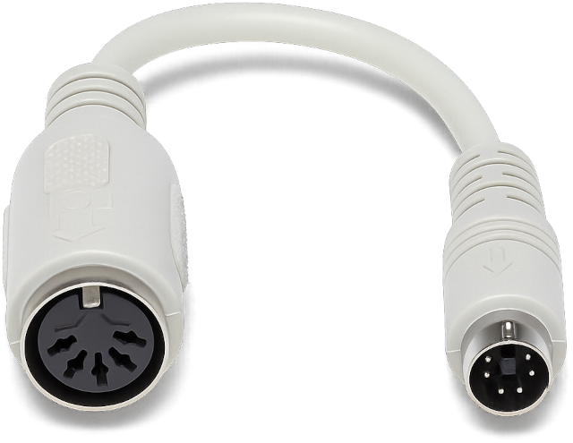

Thoughts on keyboards
I’m a big fan of keyboards. Seriously, the keyboard is that very “layer” between you and the digital world. Your digital experience — including your productivity at work and your ability to perform tasks that require pressing complex key combinations — directly depends on its comfort, ergonomics, and efficiency. And, of course, the keyboard also determines how quickly you’ll get tired when writing code or long texts.
That said, I’m not particularly fond of the fact that nowadays most discussions about keyboards tend to focus almost exclusively on the underlying technology of a given device. “Knowledge” about keyboards is often reduced to the notion that mechanical keyboards are the “right” choice, while membrane keyboards are just cheap office gear. I can’t agree with that. I’ve always believed that the most important aspect of a keyboard is, first and foremost, its form factor. Personally, I’m a big enthusiast of the most “classic” layout possible — which, by the way, includes not only the arrangement of the keys but also their color scheme. For me, a kind of benchmark is the Chicony KB-5911. Interestingly, it’s not even a mechanical keyboard, yet it still feels very strict, stylish, and premium. Honestly, when you compare it to something like the Varmilo APT108, it’s hard to believe that the Varmilo actually costs much more.
Here are some examples of classic keyboards that I find particularly appealing:


Unfortunately, the Chicony KB-5911 is quite outdated and uses a DIN-5 connector, which you practically never see nowadays. But here’s the good news: it’s fairly easy to connect a DIN-5 keyboard to a PS/2 port, which is still relatively common (and if you don’t have one, you can find a USB adapter). To do this, you can build an adapter like this:
Pin mapping (DIN-5 → PS/2)
DIN-5 |
PS/2 |
Description |
|---|---|---|
Pin 1 |
Data |
Data line |
Pin 2 |
Not used |
Not connected |
Pin 3 |
Ground |
Common ground |
Pin 4 |
+5V (VCC) |
Power supply |
Pin 5 |
Clock |
Clock signal |
So the PS/2 connector uses 4 active wires: Data, Clock, Ground, and +5V.
Existing adapters
Alternatively, you can use a DIN-5 to PS/2 adapter.
{kind=link}
Cool modern keyboards
That being said, there are some modern (mechanical!) keyboards that are still cool and have a good design. If you want to get one, I strongly recommend you making a custom build. The idea behind is that you can buy some base, and then you can replace the switches and the keycaps.

Some keyboards are already very good right out of the box. An example is Leopold FC900R BT, which I also can recommend for buying.
The switches I can recommend
These are just some examples. There are a lot of other possible choices!
Cherry MX Red (linear)
Gateron Yellow (linear)
Cherry MX Brown (light-tactile)
Cherry MX Blue (clicky)
Gateron Melodic (clicky)
Kailh Box Navy (clicky)
I don’t recommend cheap Akko switches, because I often experienced switch bounce (unstable work) with them. However, many Akko keyboards themselves are pretty good and can be used as a base.
The keycaps I can recommend
These are just some examples. There are a lot of other possible choices!
Wait, what?
Wait a second — you call yourself a keyboard enthusiast, and yet you’re using the most “ordinary” keyboards? That’s it, exactly! I see tons of discussions claiming that a keyboard must be split, that the rows absolutely shouldn’t be staggered, some folks even go all in and make the halves tilted, which they swear is the ultimate ergonomic solution. These people love telling anyone who sticks to the classic form factor: “I’ll look at you in 10 years and see what your hands look like then”.
As for me, I find that kind of reasoning naïve and silly, and honestly, I’d be far more curious (and a bit smug about it) to see their hands in those very same 10 years. 😊